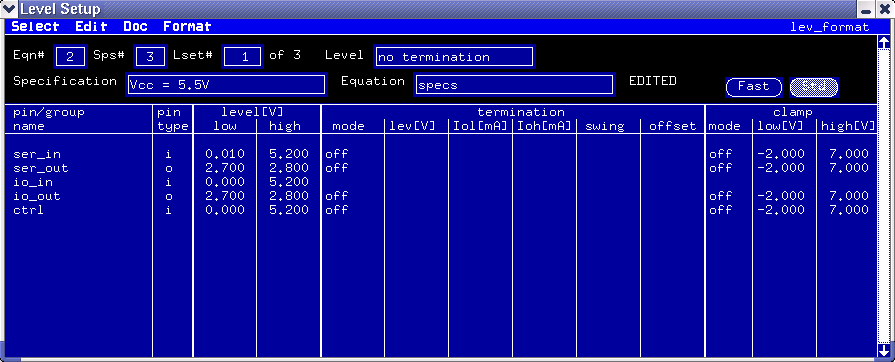
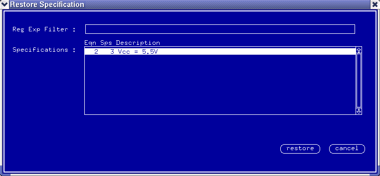

How to restore the equation settings after you change them in the Timing/Level Setup window
When editing equation and spec sets in the Timing Setup window, you can easily manipulate edges by dragging them (with the cursor) to new positions. As soon as you do this, the information area in the upper part of the window changes color and displays the letter E (the word EDIT is shown in full screen mode). This means the settings in the Timing Setup window is not consistent with the content of the timing equations.

As with the Timing Setup, when you directly edit the level equation in the Level Setup window, the information area in the upper part of the window changes color and displays the letter EDITED. This means the settings in the Level Setup window is not consistent with the content of the level equations.

You can restore your equations and settings to their values before you started editing, proceed as follows:
- In the Timing/Level setup window, click the menu .
- The Restore Specification window appears. Select the specification sets you wish to restore, and click restore.

Your original settings will be restored.